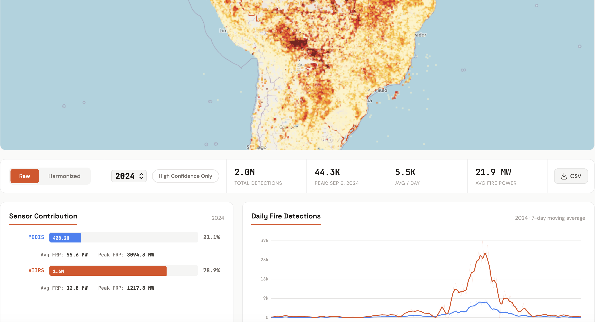

FireAtlas harmonizes MODIS and VIIRS satellite fire data into a single, coherent record — the sensor of origin no longer matters.
The problem
MODIS and VIIRS detect fires differently: resolution, confidence scales, and coverage don't align. Comparing them raw produces misleading trends.
Terra & Aqua satellites
Suomi NPP Satellite
The solution
Toggle between raw fire counts and harmonized data. Notice how the pre-2012 gap disappears when MODIS data is scaled to match VIIRS detection rates.

Coverage
Fire data availability across all three instruments, from 2000 to 2024.
FireAtlas serves the frontlines of fire response, research, and land management.
Real-time awareness of fire activity patterns for early warning and resource deployment.
Harmonized, exportable fire records for climate research and trend analysis.
Country and region-level fire calendars to plan prescribed burns and allocate resources.
Historical baselines and anomaly flags to distinguish normal seasons from emerging crises.
Daily fire heatmap for any country. Spot patterns and fire peaks at a glance.
Select any country from a Leaflet map or draw a custom region of interest.
VIIRS/MODIS ratios scale 25 years of data to one unified baseline.
Days that deviate from the historical median are flagged automatically.
Fires per day, month, year: broken down by sensor.
A 0.1° grid overlay bins every fire detection into map cells, showing density hotspots at a glance.
Pick a scenario. FireAtlas handles the rest.
Which months burn the most in Brazil vs. Australia vs. Indonesia? See side-by-side calendars.
Toggle harmonization on and off. Watch the 2012 sensor artifact disappear from the timeline.
Days that spike above the historical median are flagged automatically, no manual threshold needed.
From Terra's first pass in 2000 to today: one continuous, harmonized record for any country.
Four steps to start exploring 25 years of global fire data.
Click any country on the interactive map, or use the dropdown at the top of the dashboard. The calendar, charts, and stats update instantly.
Switch between raw fire counts and harmonized data. In raw mode, you see the 2012 VIIRS spike. In harmonized mode, MODIS counts are scaled up so the full 2000–2024 timeline is consistent.
Toggle high-confidence mode to strip out low-quality detections (cloud edges, industrial heat, sun glint) and see only the fires satellites are most certain about.
Each cell is one day. Darker cells mean more fire detections. Hover any cell to see the exact count, date, and which sensors contributed. Red-outlined cells are anomalies: days that exceeded 2× the historical median for that day-of-year.
What 415 million fire detections across 25 years reveal.
The DRC alone has 33.7 million detections, more than any other country, including Brazil (28.1M). The Sahel-to-Southern-Africa savanna corridor lights up every dry season, driven by agricultural burning and grassland fires.
Thanks to its 375m resolution vs. MODIS's 1km, VIIRS catches small agricultural burns and fragmented fires that MODIS merges or misses entirely. Brazil's ratio: 3.92×. Egypt's: 23×, because VIIRS picks up tiny Nile Delta burns.
Toggling the confidence filter dramatically thins the map: most detections are nominal or low confidence. The remaining 15% are the fires satellites are most certain about, filtering out thermal noise from industry, hot soil, and cloud edges.
Most countries show the same burning window year after year. Brazil peaks July–October. Australia peaks October–January. Central Africa's fire belt shifts north-south with the dry season. Anomaly days stand out precisely because the baseline is so stable.
Start with any country. See years of fire history in seconds.